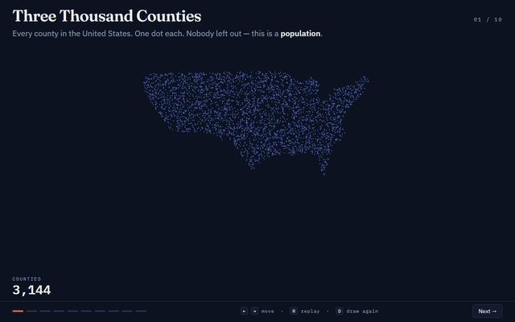
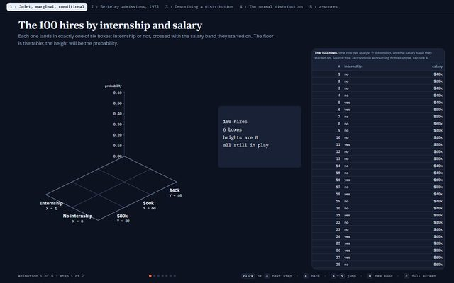
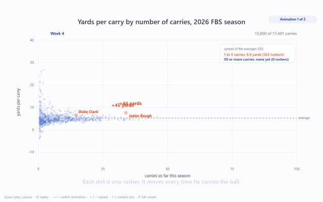
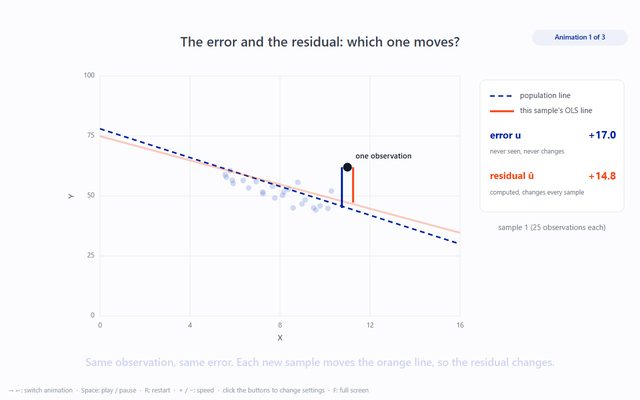
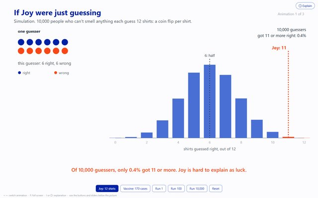
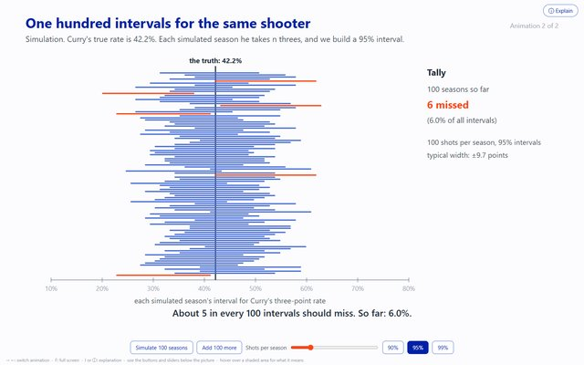
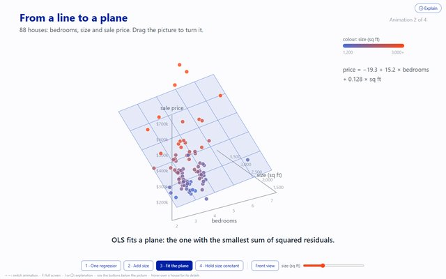
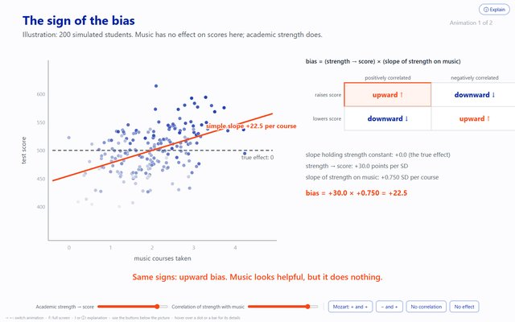

Instructor of Record
ECO 4421 Econometrics
University of Florida, Fall 2025 and Fall 2026
An undergraduate course on the statistical tools of empirical economics, built around the question of when a regression can be read as a causal effect. It covers probability and statistics review, simple and multiple regression, inference and hypothesis testing, and OLS asymptotics. Students work in R from the first week, with no programming background assumed, and write their problem sets in LaTeX.
Lecture Animations
I make an interactive animation for most of my lectures. Eight from Fall 2026 are below. They run in any browser. Click or use the arrow keys to move through the steps.
-

Mean, Standard Deviation and Sampling Error
Lecture 3
Each of the 3,144 U.S. counties is a dot shaded by median household income. The animation builds the mean and standard deviation from those dots, then draws samples so students see the estimate change with every draw. With four times the data, the error halves.
-

Joint, Marginal and Conditional Distributions
Lecture 5
A made-up firm's 100 hires are sorted by internship and starting salary into a 3D bar chart, and students read the probabilities off it. Later sections use the 1973 Berkeley admissions data and construct the normal distribution.
-

Sampling Noise and Bias
Lecture 9
Every carry of the 2026 college football season, plotted as the games were played. Players with few carries have the most extreme yards per carry, and the spread narrows as carries add up. A second animation compares a random sample with a volunteer sample like the Literary Digest poll, where more data does not remove the bias.
-

The Sampling Distribution of the OLS Slope
Lecture 10
It starts with the difference between the error and the residual. Then it draws sample after sample from a known population line and records each estimated slope until their distribution appears. Buttons change the sample size, the noise and the spread of X.
-

Hypothesis Tests and p-Values
Lecture 12
A woman says she can smell Parkinson's disease and picks out 11 of 12 t-shirts correctly. The animation has 10,000 people guess at random to show how rarely luck alone gets that far. Students then build a t-statistic and its p-value with sliders, and test twenty jelly bean colours to see how false positives pile up.
-

Confidence Intervals
Lecture 14
Students test many possible values of Kon Knueppel's true three-point rate and keep the ones a test would not reject. The values that survive are the 95% confidence interval. A simulation then gives Steph Curry a hundred seasons, each with its own interval, and marks the ones that miss his true rate.
-

Multiple Regression
Lecture 17
Eighty-eight houses sold around Boston in 1990. With bedrooms alone, one more bedroom seems to add $62,000. Students add size, turn the data in three dimensions to see the plane that least squares fits, and watch the value of a bedroom fall to $15,200. Later scenes show how R holds size constant and how R² is built.
-

Omitted Variable Bias
Lecture 18
Do music classes raise test scores, or do stronger students simply take more music? In a simulated class where music has no effect, two sliders set how academic strength affects scores and how it relates to music, and the fitted slope moves with them. A second animation works through six cases, from the ideal experiment to the sign of the bias.
Teaching Assistant
ECO 5435 Economic Data Analysis (graduate)
University of Florida, Spring 2026, for Hector Sandoval
ECO 4504 Public Economics
University of Florida, Spring 2026, for Steven Slutsky
ECP 5702 Managerial Economics (graduate)
University of Florida, Summer 2025, for Thomas Knight
ECO 2023 Principles of Microeconomics
University of Florida, Summer 2025, for Mark Rush
ECO 4421 Econometrics
University of Florida, Spring 2025, for Jay Lee
ECO 3430 Economic Analysis of Data
University of Florida, Fall 2024, for Ignacia Mercadal
ECO 4400 Game Theory and Applications
University of Florida, Summer 2024, for Fatma Gunay
ECO 3203 Intermediate Macroeconomics
University of Florida, Fall 2023, for Min Fang
ECO 5464 Game Theory and Industrial Organization (graduate)
University of Florida, Fall 2022 and Fall 2023, for Germán Bet
ECO 4400 Game Theory and Applications
University of Florida, Spring 2023, for Richard Romano
ECO 6409 Game Theory Applied to Business Decisions (graduate)
University of Florida, Fall 2022, for Richard Romano